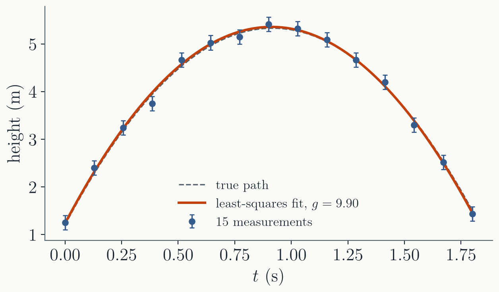
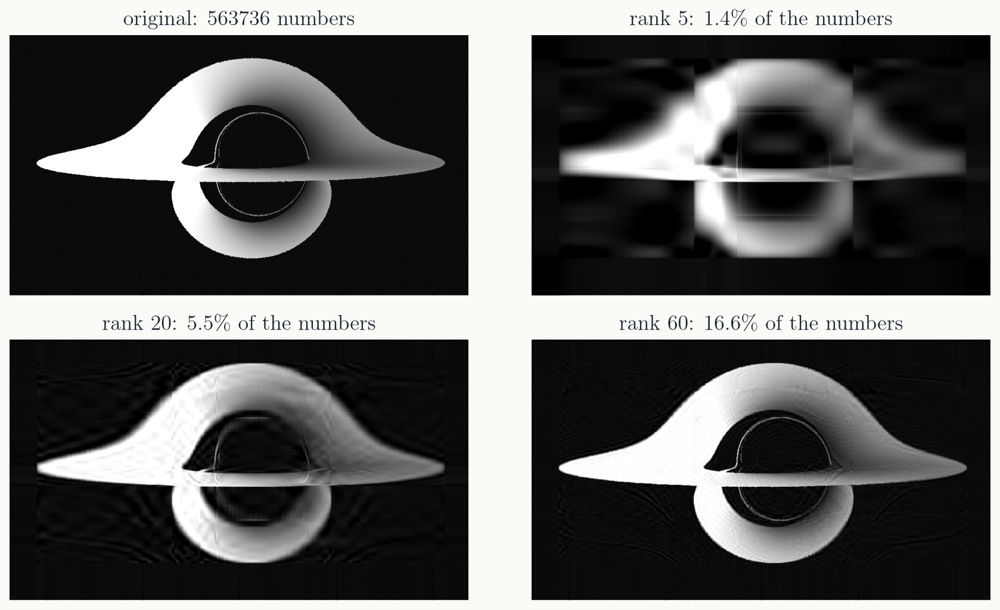
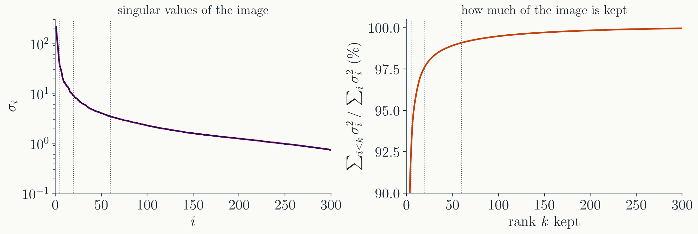
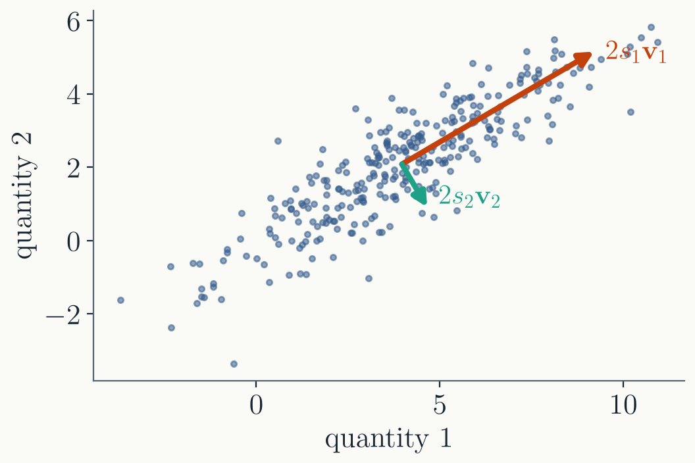
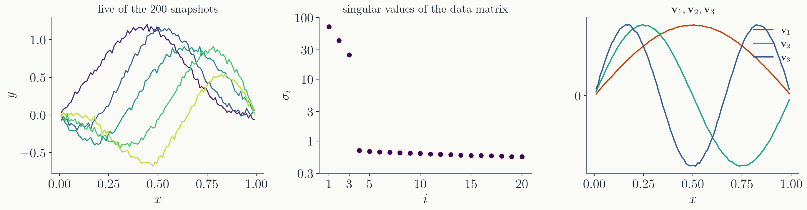

Last time
- Two ways to compute $\mathbf{A} = \mathbf{Q}\mathbf{R}$: Gram-Schmidt, which loses orthogonality, and Householder reflections, which do not.
- How close the columns of $\mathbf{A}$ are to dependent: $\kappa$, the longest unit combination of the columns over the shortest.
- LU, Cholesky, QR each need something of $\mathbf{A}$: square, positive definite, full column rank.
Today: the decomposition that exists for every matrix, and gives $\kappa$ its name. Then three things it is for: the closest solution, keeping only what matters, and finding the directions in data.
Part I · What the SVD is
Rotate, stretch, rotate
Every matrix has an SVD
Any real $m \times n$ matrix, of any shape and any rank, can be written
$$\mathbf{A} = \mathbf{U}\boldsymbol{\Sigma}\mathbf{V}^T$$- $\mathbf{U}$ ($m \times m$) and $\mathbf{V}$ ($n \times n$) are orthogonal.
- $\boldsymbol{\Sigma}$ ($m \times n$) is diagonal, with the singular values $\sigma_1 \ge \sigma_2 \ge \dots \ge 0$.
- No conditions at all: unlike LU (square, pivoting), Cholesky (positive definite), or eigenvectors (which may not exist, or may not be orthogonal).
The columns of $\mathbf{U}$ and $\mathbf{V}$
Name the columns: $\mathbf{V} = (\mathbf{v}_1\ \mathbf{v}_2 \cdots \mathbf{v}_n)$ and $\mathbf{U} = (\mathbf{u}_1\ \mathbf{u}_2 \cdots \mathbf{u}_m)$. Multiply $\mathbf{A} = \mathbf{U}\boldsymbol{\Sigma}\mathbf{V}^T$ by $\mathbf{V}$ on the right, and $\mathbf{A}\mathbf{V} = \mathbf{U}\boldsymbol{\Sigma}$. Column $i$ of that reads
$$\mathbf{A}\mathbf{v}_i = \sigma_i\,\mathbf{u}_i$$- The $\mathbf{v}_i$ are $n$ perpendicular unit input directions, the $\mathbf{u}_i$ are $m$ perpendicular unit output directions.
- $\mathbf{A}$ sends each $\mathbf{v}_i$ straight onto $\mathbf{u}_i$, stretched by $\sigma_i$. No mixing: $\mathbf{v}_1$ never leaks into $\mathbf{u}_2$.
- Any input is a combination of the $\mathbf{v}_i$, so this tells you what $\mathbf{A}$ does to everything.
That is the whole content of the SVD: the right pair of bases makes $\mathbf{A}$ a pure stretch.
What it means

- $\mathbf{V}^T$ rotates the columns $\mathbf{v}_i$ of $\mathbf{V}$ onto the axes; $\boldsymbol{\Sigma}$ stretches axis $i$ by $\sigma_i$; $\mathbf{U}$ rotates the result to the output directions $\mathbf{u}_i$.
- The unit circle becomes an ellipse with semi-axes $\sigma_1 \mathbf{u}_1$ and $\sigma_2 \mathbf{u}_2$.
An example
Its SVD is
The singular values are $4$, $3$, $\sqrt{5}$ and $0$. Each column of $\mathbf{V}$ is sent to $\sigma_i$ times a column of $\mathbf{U}$: $\mathbf{A}\mathbf{v}_1 = 4\,\mathbf{u}_1$, and so on.
What the SVD reveals
- Rank: the number of nonzero singular values. The number of independent directions $\mathbf{A}$ can produce.
- Range: all the outputs $\mathbf{A}\mathbf{x}$ can reach. Spanned by the columns of $\mathbf{U}$ with $\sigma_i > 0$. A right-hand side $\mathbf{b}$ outside it has no solution.
- Nullspace: all inputs that $\mathbf{A}$ sends to zero. Spanned by the columns of $\mathbf{V}$ with $\sigma_i = 0$ (and any columns beyond $m$). Adding one to a solution gives another solution.
- Conditioning: the longest and shortest $|\mathbf{A}\mathbf{x}|$ over unit $\mathbf{x}$ are $\sigma_1$ and $\sigma_n$. Last lecture's $\kappa$ is $\sigma_1/\sigma_n$: the condition number.
Rank plus nullspace dimension equals $n$, the number of unknowns.
Reading the example
- Three nonzero singular values, so the rank is 3.
- Range: columns 1 to 3 of $\mathbf{U}$. Any $\mathbf{b}$ with a component along column 4, $(0, 0, 1, 0)$, is out of reach.
- Nullspace: columns 4 and 5 of $\mathbf{V}$, $(-2, 0, 0, 0, 1)/\sqrt{5}$ and $(0, 0, 0, 1, 0)$. Any combination of them satisfies $\mathbf{A}\mathbf{x} = \mathbf{0}$.
- $\sigma_n = 0$, so $\kappa = \infty$: the columns of $\mathbf{A}$ are dependent.
A $1000 \times 1000$ matrix hides the same facts; the SVD digs them out.
SVD and eigenvalues
$\mathbf{A}$ need not be square, but $\mathbf{A}^T\mathbf{A}$ always is, and symmetric. Substitute the SVD:
$$\mathbf{A}^T\mathbf{A} = \mathbf{V}\boldsymbol{\Sigma}^T\mathbf{U}^T\,\mathbf{U}\boldsymbol{\Sigma}\mathbf{V}^T = \mathbf{V}\,(\boldsymbol{\Sigma}^T\boldsymbol{\Sigma})\,\mathbf{V}^T$$- That is an eigen-decomposition: the columns of $\mathbf{V}$ are the eigenvectors of $\mathbf{A}^T\mathbf{A}$, with eigenvalues $\sigma_i^2$. For our example, $16, 9, 5, 0, 0$.
- Likewise $\mathbf{A}\mathbf{A}^T = \mathbf{U}\,(\boldsymbol{\Sigma}\boldsymbol{\Sigma}^T)\,\mathbf{U}^T$: the columns of $\mathbf{U}$ are its eigenvectors.
- If $\mathbf{A}$ is itself symmetric, its singular values are $|\lambda_i|$, the absolute values of its eigenvalues.
This is why the SVD always exists: a symmetric matrix always has an orthonormal set of eigenvectors. It is not how the SVD is computed; that comes at the end.
Part II · The closest solution
When $\mathbf{A}\mathbf{x} = \mathbf{b}$ has no solution
Solving with the SVD
If $\mathbf{A}$ is square with all $\sigma_i > 0$, the inverse is three easy moves, because orthogonal matrices are inverted by transposing and a diagonal one by reciprocals:
$$\mathbf{A}^{-1} = (\mathbf{U}\boldsymbol{\Sigma}\mathbf{V}^T)^{-1} = \mathbf{V}\,\boldsymbol{\Sigma}^{-1}\mathbf{U}^T, \qquad \boldsymbol{\Sigma}^{-1} = \operatorname{diag}(1/\sigma_i)$$| rotate $\mathbf{b}$ into the output directions | $\mathbf{c} = \mathbf{U}^T\mathbf{b}$, $\quad c_i = \mathbf{u}_i \cdot \mathbf{b}$ |
| undo each stretch | $y_i = c_i / \sigma_i$ |
| rotate back to the input directions | $\mathbf{x} = \mathbf{V}\mathbf{y} = \sum_i y_i\,\mathbf{v}_i$ |
Each move is exact up to rounding. Nothing is divided by a pivot that elimination happened to produce; the only divisions are by the $\sigma_i$, which are all known before the first division is done.
When some $\sigma_i$ are zero
- Step two divides $c_i$ by $\sigma_i$. If $\sigma_i = 0$, the direction $\mathbf{u}_i$ is outside the range: no $\mathbf{x}$ can produce that part of $\mathbf{b}$. The best we can do is leave it, and set $y_i = 0$.
- That defines the pseudoinverse: $$\mathbf{A}^{+} = \mathbf{V}\,\boldsymbol{\Sigma}^{+}\mathbf{U}^T, \qquad \boldsymbol{\Sigma}^{+} = \operatorname{diag}\!\big(1/\sigma_i \text{ if } \sigma_i > 0,\ \text{else } 0\big)$$ It exists for every matrix, square or not.
- $\mathbf{x} = \mathbf{A}^{+}\mathbf{b}$ minimizes $|\mathbf{A}\mathbf{x} - \mathbf{b}|$. If several $\mathbf{x}$ tie (a nullspace), it is the shortest of them.
In practice "zero" means "below a cutoff": a $\sigma_i$ of $10^{-15}\sigma_1$ is rounding noise, and dividing by it would amplify noise by $10^{15}$.
Least squares fitting
A ball is thrown up. Its height is measured 15 times, each with some error.
The model is a parabola with three unknown coefficients:
$$y(t) = a_0 + a_1 t + a_2 t^2$$
Each measurement $(t_i, y_i)$ is one equation in the three unknowns: $$a_0 + a_1 t_i + a_2 t_i^2 = y_i$$

The matrix $\mathbf{A}$
Stack the 15 equations. Row $i$ is $(1,\ t_i,\ t_i^2)$; the right-hand side is the data:
- 15 equations, 3 unknowns, noisy data: no $\mathbf{a}$ satisfies all 15.
- Ask instead for the $\mathbf{a}$ that minimizes the total squared misfit, $|\mathbf{A}\mathbf{a} - \mathbf{y}|^2 = \sum_i (a_0 + a_1 t_i + a_2 t_i^2 - y_i)^2$. That is least squares.
The pseudoinverse does exactly this: $\mathbf{a} = \mathbf{A}^{+}\mathbf{y} = (1.235,\ 9.034,\ -4.951)$, so $g = -2a_2 = 9.90$; true $9.81$.
The normal equations
There is an older route to the same $\mathbf{a}$. At the minimum, the leftover misfit $\mathbf{r} = \mathbf{A}\mathbf{a} - \mathbf{y}$ is perpendicular to every column of $\mathbf{A}$: otherwise sliding $\mathbf{a}$ along that column would shrink it.
Perpendicular to every column means $\mathbf{A}^T\mathbf{r} = \mathbf{0}$, so $$(\mathbf{A}^T\mathbf{A})\,\mathbf{a} = \mathbf{A}^T\mathbf{y}$$
- These are the normal equations: $3 \times 3$, square, symmetric. LU or Cholesky solves them. This is how least squares is usually taught and often coded.
- For the ball they give the same $\mathbf{a}$ to all printed digits, and $|\mathbf{r}| = 0.33$, about the measurement noise.
Why not the normal equations?
Because $\mathbf{A}^T\mathbf{A}$ is worse conditioned than $\mathbf{A}$. Its singular values are $\sigma_i^2$ (the "SVD and eigenvalues" slide), so its condition number is $\kappa^2$.
| polynomial degree | $\kappa(\mathbf{A})$ | $\kappa^2$ | residual, SVD | residual, normal equations |
|---|---|---|---|---|
| 4 | $7 \times 10^{2}$ | $4 \times 10^{5}$ | $1.8 \times 10^{-2}$ | $1.8 \times 10^{-2}$ |
| 8 | $6 \times 10^{5}$ | $4 \times 10^{11}$ | $2.1 \times 10^{-6}$ | $2.1 \times 10^{-6}$ |
| 12 | $7 \times 10^{8}$ | $5 \times 10^{17}$ | $3.9 \times 10^{-11}$ | $4.7 \times 10^{-8}$ |
| 16 | $8 \times 10^{11}$ | $6 \times 10^{23}$ | $9.8 \times 10^{-15}$ | $2.7 \times 10^{-6}$ |
Fitting a smooth function on $[0, 1]$ with 60 points. Once $\kappa^2$ passes $10^{16}$, the normal equations return coefficients that are wrong by a factor of order one; the SVD keeps improving.
Same lesson as Gram-Schmidt against Householder: work on $\mathbf{A}$ itself, never on a product that squares its conditioning.
In practice
Python: lstsq is the SVD route, and
rcond is the cutoff for small $\sigma_i$:
A = np.vstack([np.ones_like(t), t, t**2]).T
a, res, rank, sv = np.linalg.lstsq(A, y, rcond=None)
U, s, Vt = np.linalg.svd(A, full_matrices=False)
C++ with Eigen: build the thin SVD and ask it to solve.
Eigen::MatrixXd A(15, 3);
Eigen::VectorXd y(15); // fill both
auto svd = A.bdcSvd(Eigen::ComputeThinU
| Eigen::ComputeThinV);
Eigen::VectorXd a = svd.solve(y);
- For a well-conditioned $\mathbf{A}$, QR
(
colPivHouseholderQr().solve) does the same job faster. The SVD is for when you want to see the $\sigma_i$. - Parameters that enter non-linearly
($e^{-t/\tau}$, $\sin\omega t$) need an iterative fit
(
scipy.optimize.curve_fit), which solves a linear least-squares problem like this one at every step.
Part III · Keeping only what matters
Low-rank approximation
A matrix as a sum of layers
Written out column by column, the SVD is a sum of rank-one pieces, one per singular value:
$$\mathbf{A} = \sum_{i=1}^{r} \sigma_i\,\mathbf{u}_i\mathbf{v}_i^T = \sigma_1\mathbf{u}_1\mathbf{v}_1^T + \sigma_2\mathbf{u}_2\mathbf{v}_2^T + \dots$$- The $\sigma_i$ are sorted, so the terms come in order of importance. Keep the first $k$: $\mathbf{A}_k = \sum_{i \le k} \sigma_i\mathbf{u}_i\mathbf{v}_i^T$.
- $\mathbf{A}_k$ is the closest matrix of rank $k$ to $\mathbf{A}$, and the error is the first thing dropped: $\max_{|\mathbf{x}|=1}|(\mathbf{A} - \mathbf{A}_k)\mathbf{x}| = \sigma_{k+1}$.
- Storage: $k$ vectors of length $m$, $k$ of length $n$, and $k$ numbers. $k(m + n + 1)$ instead of $mn$.
The Project 1 image at low rank

One color channel of the Project 1 image: $566 \times 996$ pixels, $563{,}736$ numbers. Treat it as a matrix and keep the first $k$ layers.
Rank 5 stores $1.4\%$ of the numbers and is a smear.
Rank 20 stores $5.5\%$ and shows the shadow and the lensed arcs.
Rank 60 stores $17\%$ and is hard to tell from the original.
Where the information is

- $\sigma_1 = 215$; the error at rank 5 is $\sigma_6 = 31$, at rank 20 it is $\sigma_{21} = 8.5$, at rank 60 it is $3.4$. Rank 20 keeps $97.6\%$ of $\sum\sigma_i^2$.
- A picture with structure has a few large $\sigma_i$ and a long tail. Pure noise has a flat spectrum. So truncation keeps the structure and drops most of the noise.
Part IV · Finding the directions in data
Principal component analysis
The data matrix
$n$ measurements of $p$ quantities: an $n \times p$ matrix $\mathbf{X}$, one row per measurement. Subtract the mean of each column.
SVD: $\mathbf{X} = \mathbf{U}\boldsymbol{\Sigma}\mathbf{V}^T$. The $\mathbf{v}_i$ are the principal directions, and the spread of the data along $\mathbf{v}_i$ is $s_i = \sigma_i/\sqrt{n - 1}$.
Here: 300 points. Along $\mathbf{v}_1$ the spread is $3.04$, along $\mathbf{v}_2$ it is $0.68$; $95\%$ of the variance is along $\mathbf{v}_1$. (Generated with $3.0$ and $0.7$ at $30°$; the SVD found $30.4°$.)

Example: a vibrating string
A plucked string, its shape recorded 200 times at 100 points, with noise: $\mathbf{X}$ is $200 \times 100$, one row per snapshot.

- Three singular values stand out ($71,\ 43,\ 25$), then a noise floor. Every snapshot is a combination of just three shapes.
- Those shapes, $\mathbf{v}_1, \mathbf{v}_2, \mathbf{v}_3$, are the normal modes $\sin \pi x$, $\sin 2\pi x$, $\sin 3\pi x$. The SVD found them from the snapshots alone; the $\mathbf{u}_i$ are their oscillations in time.
PCA and the covariance matrix
The covariance of the $p$ quantities is the $p \times p$ matrix $\mathbf{C} = \mathbf{X}^T\mathbf{X}/(n - 1)$. With the SVD of $\mathbf{X}$:
$$\mathbf{C} = \mathbf{V}\,\frac{\boldsymbol{\Sigma}^T\boldsymbol{\Sigma}}{n - 1}\,\mathbf{V}^T$$- So the principal directions are the eigenvectors of the covariance matrix, and the variances along them, $s_i^2$, are its eigenvalues. That is how PCA is usually introduced.
- Lecture 14 went the other way: from a covariance matrix, Cholesky built correlated random numbers. PCA reads the covariance's axes back out of the data.
- Either route works. The eigenvalue route is fine when $p$ is small, as here ($p = 4$). The SVD of $\mathbf{X}$ wins when $p$ is large (pixels, wavelengths): it never forms the $p \times p$ matrix, and it gives each sample's coordinates for free.
How the SVD is computed
- Not from $\mathbf{A}^T\mathbf{A}$: that squares $\kappa$ and loses the small $\sigma_i$, which are often the point.
- Householder reflections from both sides bring $\mathbf{A}$ to bidiagonal form (two diagonals), the way they brought a symmetric matrix to tridiagonal form for eigenvalues.
- Then an iteration in the family of the QR iteration drives the off-diagonal to zero. The diagonal that remains holds the $\sigma_i$; the accumulated reflections and rotations are $\mathbf{U}$ and $\mathbf{V}$.
- Cost: a small multiple of QR's, about
$4mn^2$ for a tall matrix.
numpy.linalg.svdcalls LAPACK'sgesdd; Eigen hasBDCSVD(large) andJacobiSVD(small, most accurate).
Golub and Kahan, 1965. You will never write it; you should know it is a factorization of $\mathbf{A}$ itself, with orthogonal transformations only, which is why it is accurate.
Summary
- $\mathbf{A} = \mathbf{U}\boldsymbol{\Sigma}\mathbf{V}^T$ exists for every matrix: rotate, stretch, rotate. It reveals rank, range, nullspace, and the condition number $\sigma_1/\sigma_n$.
- Closest solution: $\mathbf{x} = \mathbf{V}\boldsymbol{\Sigma}^{+}\mathbf{U}^T\mathbf{b}$ minimizes $|\mathbf{A}\mathbf{x} - \mathbf{b}|$. Least-squares fitting is this with $A_{ij} = f_j(x_i)$. Never form $\mathbf{A}^T\mathbf{A}$.
- Low rank approximation: keep the first $k$ terms of $\sum \sigma_i\mathbf{u}_i\mathbf{v}_i^T$; the error is $\sigma_{k+1}$.
- PCA: the SVD of the centered data matrix. The $\mathbf{v}_i$ are the directions of largest spread, $\sigma_i^2/(n-1)$ the variances.
Next time: partial differential equations. The advection equation, and why the obvious scheme blows up.